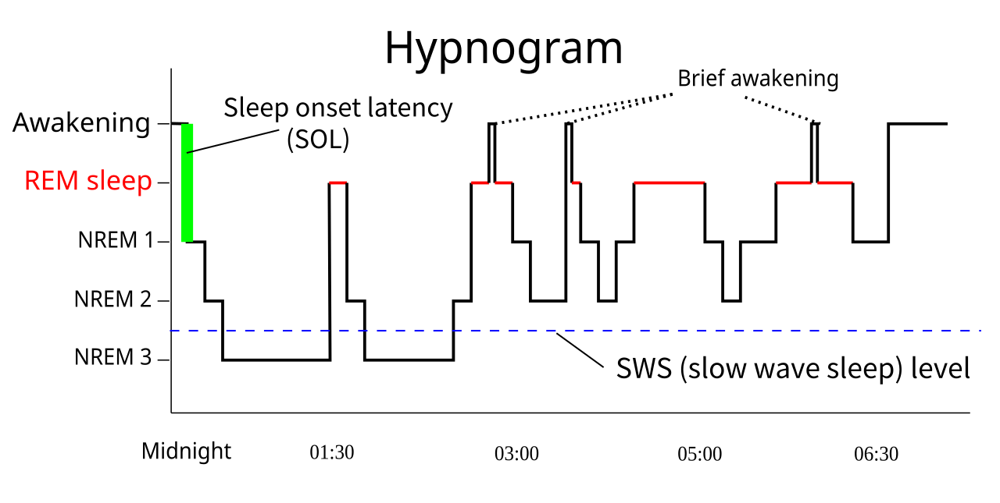

Các phần ăn chuẩn bị sẵn minh họa việc sắp xếp bữa ăn theo điều kiện sinh hoạt; ảnh không quy định giờ nhịn hay khẩu phần cá nhân. Prepared meals illustrate organising food around daily life; the image prescribes neither fasting hours nor individual portions.
Julia M Cameron · Pexels License · Pexels thu nhỏ/nén JPEG; không sửa nội dung.
Phù hợp phần xem xét khả năng ăn đủ và duy trì lịch ăn. Không suy calo, năng lượng sẵn có hoặc tác dụng tăng testosterone từ ảnh.
Người chạy uống từ chai trong một cuộc đua theo mô tả nguồn, minh họa việc tiếp cận đồ uống khi vận động. A runner drinks from a bottle during a race, as described by the source, illustrating access to drinks during exercise.
RUN 4 FFWPU · Pexels License · Pexels thu nhỏ/nén JPEG; không sửa nội dung.
Đúng bối cảnh vận động; không suy mức mất nước, thành phần điện giải hay lượng cần uống từ ảnh. Không khuyến khích mọi người phải vừa chạy vừa uống.
Ảnh minh họa một người thức dậy và vươn vai trên giường; tư thế hoặc vẻ ngoài không cho biết có cương buổi sáng hay mức testosterone. An illustrative waking and stretching scene; posture and appearance reveal neither morning erections nor testosterone levels.
SHVETS production · Pexels License · Pexels thu nhỏ/nén JPEG; không sửa nội dung.
Gắn với thời điểm thức dậy mà không dùng ảnh tình dục, gán triệu chứng hoặc biến mỗi buổi sáng thành bài tự kiểm tra hormone.

Biểu đồ giai đoạn giấc ngủ minh họa từ nguồn; đây không phải phép đo cương khi ngủ hay bản ghi của người đọc. A source-provided illustrative sleep-stage hypnogram; it is neither a nocturnal-erection measurement nor the reader’s sleep record.
RazerM at English Wikipedia · CC BY-SA 3.0 · PNG kết xuất từ SVG; giữ nguyên nội dung.
Hỗ trợ phần giải thích cấu trúc giấc ngủ thay đổi trong đêm. Không suy một lần cương từ mỗi đoạn REM hay coi hình là lịch ngủ bắt buộc.
Chạy ngoài trời là một ví dụ hoạt động thể lực; cường độ và kế hoạch cần phù hợp với sức khỏe của mỗi người. Outdoor running is one example of physical activity; intensity and planning should suit each person’s health.
Barbara Olsen · Pexels License · Pexels thu nhỏ/nén JPEG; không sửa nội dung.
Minh họa vận động trong chăm sóc sức khỏe chung. Không gọi ảnh là bài tập chữa rối loạn cương, bằng chứng tăng nitric oxide hay số đo Zone 2.
Sơ đồ nhìn nghiêng cơ quan sinh dục và đường tiết niệu nam, với ống dẫn tinh, túi tinh, tuyến tiền liệt và niệu đạo. A lateral diagram of male reproductive and urinary anatomy, including the vas deferens, seminal vesicle, prostate and urethra.
Wumingbai · CC BY-SA 4.0 · PNG kết xuất từ SVG; giữ nguyên nội dung.
Giúp định vị các cấu trúc khi giải thích xuất tinh; sơ đồ không thể xác định nguyên nhân hoặc thời gian xuất tinh của cá nhân.
Sơ đồ tinh hoàn và mào tinh có nhãn các ống sinh tinh, minh họa cấu trúc liên quan đến sản xuất và vận chuyển tinh trùng. A labelled diagram of the testis and epididymis, including seminiferous tubules, illustrates structures involved in sperm production and transport.
OpenStax Anatomy and Physiology, version 8.25 from the Textbook · CC BY 4.0 · Giữ nguyên nội dung file ảnh gốc.
Đối chiếu với giáo trình OpenStax về giải phẫu tinh hoàn. Đây không phải siêu âm, chẩn đoán vô sinh hoặc cách đánh giá khả năng sinh sản từ kích thước nhìn thấy.
Ảnh hiển vi tinh trùng người đã nhuộm theo mô tả tác giả, minh họa mẫu được xem xét trong phòng xét nghiệm. A stained human-sperm micrograph, identified by its author, illustrates a specimen examined in a clinical laboratory.
Bobjgalindo · CC BY-SA 4.0 · Bản thu nhỏ; giữ nguyên nội dung.
Đúng mẫu người và loại hình xét nghiệm. Không gán nồng độ, độ di động, chẩn đoán hay xác suất có thai từ một ảnh tĩnh.
Ảnh dàn dựng trao đổi với bác sĩ, minh họa việc nêu triệu chứng và mục tiêu chăm sóc trước khi quyết định xét nghiệm. A staged medical consultation illustrates discussing symptoms and care goals before deciding on testing.
SHVETS production · Pexels License · Pexels thu nhỏ/nén JPEG; không sửa nội dung.
Phù hợp quyết định có chỉ định xét nghiệm, không gán thiếu testosterone cho người mẫu hoặc dùng ảnh để cổ vũ sàng lọc đại trà.
Các ống nghiệm rỗng trong giá phòng thí nghiệm. Empty test tubes in a laboratory rack.
RDNE Stock project · Pexels License · Bản JPEG thu nhỏ/nén từ nguồn.
Ảnh minh họa bối cảnh chủ đề, không phải kết quả đo hay chẩn đoán.
Ảnh minh họa hai người trao đổi bên bàn, phù hợp phần lắng nghe và quay lại một vấn đề cụ thể khi đã bình tĩnh. Two people talking at a table illustrate listening and returning to a specific issue when calm.
Mikhail Nilov · Pexels License · Pexels thu nhỏ/nén JPEG; không sửa nội dung.
Không gán tranh cãi, bạo lực hoặc mức stress cho người trong ảnh. Không dùng nhịp tim để xác định khả năng giao tiếp.
Một cuộc trò chuyện tại nhà minh họa việc nói rõ mong muốn và giới hạn trong thời điểm cả hai thấy thoải mái. A conversation at home illustrates discussing preferences and boundaries at a mutually comfortable time.
Ivan S · Pexels License · Pexels thu nhỏ/nén JPEG; không sửa nội dung.
Không gán ai có ham muốn cao hoặc thấp từ vẻ ngoài, cử chỉ hay giới tính; không coi ngồi gần là đồng thuận với hoạt động tình dục.
Cùng ghi chép và bàn một công việc minh họa việc thống nhất cam kết cụ thể, khả thi trong sinh hoạt. Taking notes and discussing a shared task illustrate agreeing on specific, practical everyday commitments.
Ketut Subiyanto · Pexels License · Pexels thu nhỏ/nén JPEG; không sửa nội dung.
Đúng hành động có thể quan sát, không dùng ổ khóa hoặc ảnh kiểm tra điện thoại làm biểu tượng lòng tin. Ảnh không chứng minh sự trung thành hay chất lượng quan hệ.
Hai người nằm nghỉ quay lưng trên cùng giường; tư thế ngủ không tự cho biết chất lượng quan hệ. Two people resting back to back in one bed; sleeping position alone does not indicate relationship quality.
Gary Barnes · Pexels License · Pexels thu nhỏ/nén JPEG; không sửa nội dung.
Gắn trực tiếp với sắp xếp giấc ngủ. Không gán xung đột, ngáy hay bệnh lý cho người mẫu, và không coi ngủ chung là lựa chọn bắt buộc.
Hỗ trợ phần bàn giờ ngủ và hoàn cảnh chăm sóc. Không yêu cầu chia sẻ dữ liệu riêng tư, dùng nhật ký để kiểm soát nhau hoặc coi các giờ trong mẫu là mục tiêu bắt buộc.
Giải phẫu cơ quan sinh dục nam nhìn nghiêng, có ống dẫn tinh, túi tinh, tuyến tiền liệt và niệu đạo. A lateral diagram of male reproductive anatomy showing the vas deferens, seminal vesicle, prostate and urethra.
Wumingbai · CC BY-SA 4.0 · PNG kết xuất từ SVG; giữ nguyên nội dung.
Giúp định vị đường vận chuyển và các tuyến khi giải thích xuất tinh. Hình không mô tả hoặc đo trải nghiệm cực khoái, lượng tinh dịch hay thời gian hồi phục.
Sơ đồ cơ vùng đáy chậu nam và nữ nhìn từ dưới. Diagram of male and female perineal muscles viewed from below.
OpenStax · CC BY 4.0 · Giữ nguyên nội dung ảnh nguồn.
Sơ đồ giải phẫu tham khảo, không phải hình ảnh hay chẩn đoán cá nhân.
Sơ đồ cấu trúc tinh hoàn và mào tinh; ảnh giải phẫu không đo testosterone hay tác động của kiêng xuất tinh. An anatomical diagram of the testis and epididymis; it measures neither testosterone nor the effects of ejaculatory abstinence.
OpenStax Anatomy and Physiology, version 8.25 from the Textbook · CC BY 4.0 · Giữ nguyên nội dung file ảnh gốc.
Định hướng cơ quan trong phần giải thích sinh sản và hormone. Không dùng ảnh người thủ dâm, biểu đồ tăng T không có dữ liệu hoặc thang đếm số lần.
Ảnh minh họa hai người lớn tuổi trò chuyện và dành thời gian bên nhau; mong muốn và cách gần gũi khác nhau ở từng người. An illustrative scene of two older adults talking and spending time together; preferences and forms of closeness vary between people.
SHVETS production · Pexels License · Pexels thu nhỏ/nén JPEG; không sửa nội dung.
Thể hiện bối cảnh tuổi tác mà không gán suy giảm ham muốn, thiếu hormone hoặc giới hạn tuổi cho đời sống tình dục.